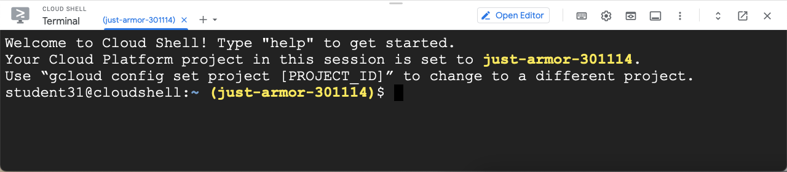

Introduction to Cloud Compute (Google Compute Engine)¶
Learner Questions
How do I compute in the cloud?
Learning Objectives:
Navigate the Google Compute Engine service and terminology.
Allocate a virtual machine in Google Compute Engine.
Choose a machine type based on the application.
Understand how storage is managed for virtual machines.
Use the cost estimator for Google Compute Engine.
Understand what a service account is and how they are used.
Drew, after working with a Research Computing and Data (RCD) facilitator, has decided to start their cloud journey with compute, specifically a Virtual Machine, to process data in the cloud with a large and powerful machine to do the analysis.
Google Compute Engine¶
To learn more about the Google Compute Engine service we will use the web console to create, explore, and destroy a Virtual Machine. The ability to quickly create, explore, and then discard resources in the web-console is a powerful tool to explore a service. After an initial exploration with the web-console, programmatic access using scripts or configuration management systems should be used.
Unfortunately, the terminology used for cloud computing differs from one commercial cloud provider to another. Google Compute Engine uses the term VM instance to refer to a running virtual machine, image for the boot disk containing the operating system, and disk for the writable storage used for a running VM Instance.
We now take Drew through the process of creating a Google Compute Engine VM instance.
Allocate a VM Instance¶
We will first create an VM instance with defaults to explore the Google Compute Engine service.
To create a bucket we do the following:
Click Navigation Menu -> Compute Engine (under Compute) -> VM Instances -> +Create Bucket (just under the blue bar) to open the Create an instance page.
In the New VM instance tab on the left (selected by default) configure the VM instance as follows:
For Name, enter a unique name for the instances (example: “essentials-instance-1”)
For Region leave the default or select your “home” region. The region is the physical location where your data will reside. Your “home” region should be close to your work and the region you use most often.
For Zone leave the default (note how the name is constructed and that it is a separate data center).
In the Machine configuration section:
For Series select E2 (default). The other options are for types of machines.
For Machine type select e2-medium (default)
Leave the remaining options as default.
In the Identity and API access section note that for the Service Accounts -> Service account option that the Compute Engine default service account is selected. This allows the VM Instance to access and edit any resources in the project.
Note the Monthly estimate in the right side panel. This is only for running the VM instance and does not include other storage, networking, compute, and other charges that may occur by running software. Click Details show a breakdown of the VM instance only costs.
Finally, click Create to create the VM Instance (allocate the resource).
Security¶
Everything in the cloud requires permission (authorization). Ordinary we would configure and check security first but in the case of exploring services it is often easier to do things out of order. We noted that the VM instance was created with the Compute Engine default service account, which by default has access to all the resources that your Google Account does.
Specifically, we are interested in verifying what permissions that the Compute Engine default service account has for your VM instances . To do this navigate to the IAM page (Navigation Menu -> IAM & Admin -> IAM -> Permissions -> View By: Principals)
Note: There is a powerful filter box to limit the permissions shown.
In the Name column you should see a row with Compute Engine default service account. Here you should see the Editor role in the Role column. A role is a collection of permissions managed by Google or someone else. The Editor role for a project will allow a VM instance to modify resources in the project. The principal for the Compute Engine default service account should start with the Project ID of your project. It is possible to create a custom service account with the appropriate roles for the VM Instance.
There are three important pieces of information that work together to form the IAM policy. The permission (role), the identity (principal or member), and the resource (project).
Follow the Storage Allocation¶
Just as with security, we will audit (follow) the VM instance creation by examining at the project activity.
To view the project activity we do the following:
Navigate to the project Dashboard by clicking on “Google Cloud Platform” on the left side of the top blue bar.
Select Activity tab just below the top blue bar.
Look for the row with Create VM on the top of the table. This shows that the VM Instance was created.
Expand the detail by clicking the down arrow on the right side of the row. You can see what identity created the bucket and the name. The rest of the information details the initial settings that you configured when creating the bucket. The details are not really important at this time, just know they exist.
Note that the activity is on the project, not the account.
Enumerate the VM Instances¶
To see an overview of resources in the project navigate to the dashboard and you will now see at least 1 instance in the resources card under Compute Engine.
Now lets find and connect to the VM Instance.
Navigate to the Google Compute Engine page by clicking Navigation Menu -> Compute Engine (under Compute) -> Instances.
Find the VM instance you just created. You can use the filter to find a bucket if there are a lot of them.
Click on the VM instance name to open the VM instance details (it will display as a hyperlink when you hover over the VM instance name).
Connect to the VM Instance¶
To connect to the VM Instance we will use the cloud shell in the web console. Open up a shell by clicking on the Activate Cloud Shell icon in the top blue bar if it is not already open.
We first verify that the cloud shell is using the correct identity and project id by looking at the welcome message and the prompt.

To connect to the VM instance we enter the following command in the cloud shell:
gcloud compute ssh essentials-instance-1
If you have not used the cloud shell to connect to a VM Instance before you will probably be asked to create a new ssh key. The Compute Engine will use this key to allow you to access the VM instance in a secure manner. If this is the case you will see a message similar to the following:
WARNING: The private SSH key file for gcloud does not exist.
WARNING: The public SSH key file for gcloud does not exist.
WARNING: You do not have an SSH key for gcloud.
WARNING: SSH keygen will be executed to generate a key.
This tool needs to create the directory [/home/student231/.ssh] before
being able to generate SSH keys.
Do you want to continue (Y/n)?
Press enter to continue to create the key. You will see another message asking you for a passphrase, similar to the following:
Generating public/private rsa key pair.
Enter passphrase (empty for no passphrase):
Here you should enter a passphrase (a series of words) to protect the key. You will be asked to re-enter the passphrase as shown below:
Enter same passphrase again:
After successfully retyping the passphrase the key generation process will continue showing similar message as follows (the fingerprint and art will look different):
Your identification has been saved in /home/student231/.ssh/google_compute_engine.
Your public key has been saved in /home/student231/.ssh/google_compute_engine.pub.
The key fingerprint is:
SHA256:D9yj1nZEUigahirvjkIFoCP7RfjDu67Ku88M7nHQftI student231@cs-748001990186-default-boost-r9phq
The key's randomart image is:
+---[RSA 2048]----+
|o . .. |
|.. .. o . .. |
|+ o... o .. . |
|ooo= .. . o |
|.+..= S o . |
| o+..o = o |
|.+.+.E o + . |
|+.B o. . . . |
|=O**o |
+----[SHA256]-----+
The ssh key generation is now complete. This will only happen once for your account and you will start here on future connections.
At this point the command will attempt to connect to the VM Instance and will ask the following question:
Did you mean zone [us-central1-a] for instance: [instance-1] (Y/n)? n
Answer “n”.
The command will now configure the instance to allow your ssh key and connect to it.
No zone specified. Using zone [us-central1-a] for instance: [instance-1].
Updating project ssh metadata...working..Updated [https://www.googleapis.com/compute/v1/projects/class-essentials-gcp-demo-1].
Updating project ssh metadata...done.
Waiting for SSH key to propagate.
Warning: Permanently added 'compute.74517428106645607' (ECDSA) to the list of known hosts.
Once connected you will see the machine login banner and prompt similar to the following:
Linux instance-1 4.19.0-17-cloud-amd64 #1 SMP Debian 4.19.194-3 (2021-07-18) x86_64
The programs included with the Debian GNU/Linux system are free software;
the exact distribution terms for each program are described in the
individual files in /usr/share/doc/*/copyright.
Debian GNU/Linux comes with ABSOLUTELY NO WARRANTY, to the extent
permitted by applicable law.
student231@essentials-instance-1:~$
Congratulations you have now created a VM Instance and connected to it.
Feel free to interact with the machine for a while and type
exit
when you are done.
Delete the Storage - Exercise¶
We will now complete the resource life-cycle by deleting the VM Instance we just created. Think about the process we did for creating the bucket and follow a similar one.
Did you “Follow” the bucket by looking at the activity page?
Since we care about paying for resources we are not using we review by visiting the dashboard and reviewing that we no longer have any buckets, if this was our only bucket.
References¶
Compute Engine Permissions (IAM): https://cloud.google.com/compute/docs/access/iam